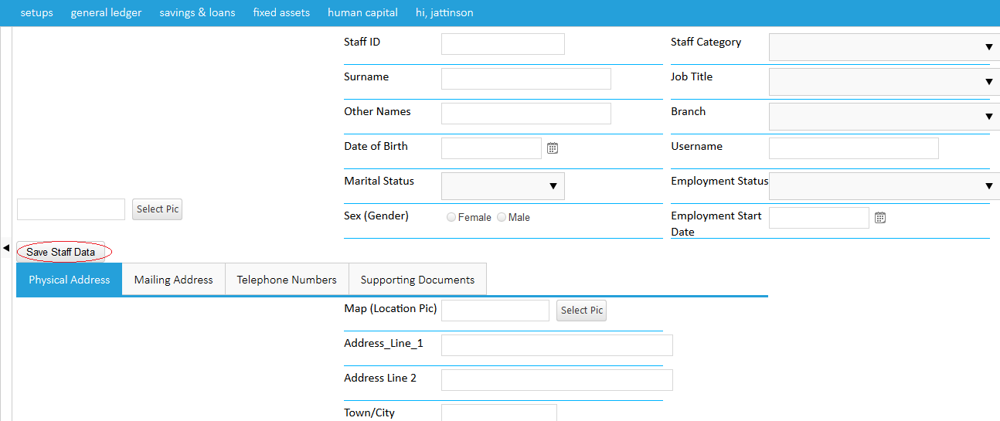

New Staff is usually chosen when a new staff joins the organization.After clicking on new staff, fill in the form provided with the personal details of the staff and other info such as job start date, job title,branch etc after which you click on save staff data to save info as shown in the images below.


Created with the Personal Edition of HelpNDoc: Free Kindle producer